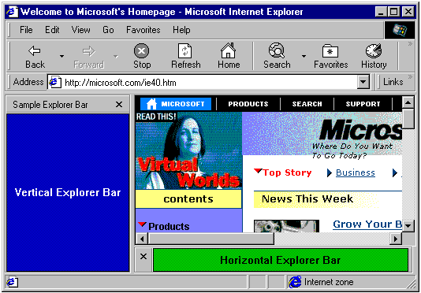
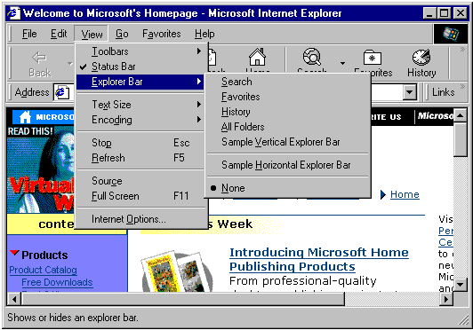
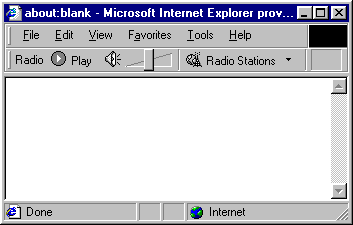
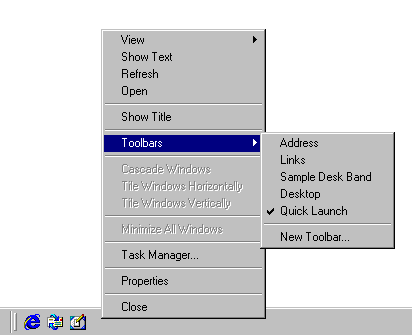
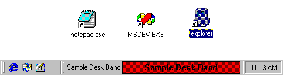
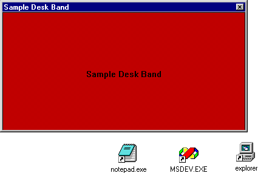

| ||||||
The Explorer Bar was introduced with Microsoft® Internet Explorer 4.0 to provide a display area adjacent to the browser pane. It is basically a child window within the Internet Explorer window, and it can be used to display information and interact with the user in much the same way. Explorer Bars are most commonly displayed as a vertical pane on the left-hand side of the browser pane. However, an Explorer Bar can also be displayed horizontally, below the browser pane.

There is a wide range of possible uses for the Explorer Bar. Users can select which option they wish to see in several different ways, including selecting it from the Explorer Bars submenu of the View menu, or clicking a toolbar button. Internet Explorer provides several standard Explorer Bars, including Favorites and Search.
One of the ways you can customize Internet Explorer is by adding a custom Explorer Bar. When implemented and registered, it will be added to the Explorer Bar submenu of the View menu. When selected by the user, the Explorer Bar's display area can then be used to display information and take user input in much the same way as a normal window.

To create a custom Explorer Bar, you must implement and register a band object. Band objects were introduced with version 4.71 of the shell and provide capabilities similar to those of normal windows. However, because they are COM objects and contained by either Internet Explorer or the shell, they are implemented somewhat differently. Simple band objects were used to create the sample Explorer Bars displayed in the first graphic. The implementation of the vertical Explorer Bar sample will be discussed in detail in a later section.
A tool band is a band object that was introduced with Internet Explorer 5 to support the Microsoft® Windows® radio toolbar feature. This feature provides a way to put a window on a band contained by the rebar control  that holds Internet Explorer's toolbars.
that holds Internet Explorer's toolbars.

Users display the radio toolbar by selecting it from the Toolbars submenu of the View menu or from the context menu that is displayed by right-clicking the toolbar area.
Band objects can also be used to create desk bands. While their basic implementation is similar to Explorer Bars, desk bands are unrelated to Internet Explorer. A desk band is basically a way to create a dockable window on the desktop. The user selects it by right-clicking the taskbar and selecting it from the Toolbars submenu.

Initially, desk bands are docked on the taskbar:

The user can then drag the desk band to the desktop, and it will appear as a normal window:

Although they can be used much like normal windows, band objects are COM objects that exist within a container. Explorer Bars are contained by Internet Explorer, and desk bands are contained by the shell. While they serve different functions, their basic implementation is very similar. The primary difference is in how the band object is registered, which in turn controls the type of object and its container. This section discusses those aspects of implementation that are common to all band objects. For more information about implementation, see the vertical Explorer Bar example.
In addition to IUnknown and IClassFactory, all band objects must implement the following interfaces:
In addition to their CLSID, the Explorer Bar and desk band objects must be registered for the appropriate component category. Registering the component category determines the object type, and its container. Tool bands do not have a CATID. The CATIDs for the three band objects that require them are:
| Band Type | Component Category |
| Vertical Explorer Bar | CATID_InfoBand |
| Horizontal Explorer Bar | CATID_CommBand |
| Desk Band | CATID_DeskBand |
If the band object is to accept user input, it must also implement IInputObject. To add items to the context menu, it must implement IContextMenu.
Because band objects implement a child window, they must also implement a window procedure to handle Microsoft® Windows® messaging.
Band objects can send commands to their container through its IOleCommandTarget interface. To obtain the interface pointer, call the container's IInputObjectSite::QueryInterface method and ask for IID_IOleCommandTarget. You then send commands to the container with IOleCommandTarget::Exec. The command group is CGID_DeskBand. When a band object's IDeskBand::GetBandInfo method is called, the container uses the dwBandID parameter to assign the band object an identifier. When you call IOleCommandTarget::Exec, the pvaIn parameter should be set to the band identifier that was received in the most recent call to IDeskBand::GetBandInfo. Two commands are supported:
A band object must be registered as an OLE in-process server that supports apartment threading. The default value for the server is a menu text string. For Explorer Bars, it will appear in the Explorer Bar submenu of the Internet Explorer View menu. For tool bands, it will appear in the Toolbars submenu of the View menu. For desk bands, it will appear in the Toolbars submenu of the taskbar's context menu. As with menu resources, placing an ampersand (&) in front of a letter will cause it to be underlined and enable keyboard shortcuts. For example, the menu string for the vertical Explorer Bar shown in the first graphic is "Sample &Vertical Explorer Bar".
In general, the basic registry entry for a band object will look like the following:
HKEY_CLASSES_ROOT
...
CLSID
...
{Your Band Object's CLSID GUID} = "Menu Text String"
InProcServer32 = "DLL Pathname"
ThreadingModel = "Apartment"
Tool bands must also have their object's CLSID registered with Internet Explorer. To do this, create a REG_SZ value under HKEY_LOCAL_MACHINE\Software\Microsoft\Internet Explorer\Toolbar named with the string form of the tool band object's CLSID GUID. For example:
HKEY_LOCAL_MACHINE
Software
Microsoft
Internet Explorer
Toolbar
{Your Band Object's CLSID GUID}
There are several optional values, not used by the example, that can also be added to the registry. The first two are necessary if you want to use the Explorer Bar to display HTML. The last one defines the default width or height of the Explorer Bar, depending on whether it is vertical or horizontal, respectively.
The registry entry for an HTML-capable Explorer Bar with a default width of 291 pixels will look like the following:
HKEY_CLASSES_ROOT
...
CLSID
...
{Your Band Object's CLSID GUID} = "Menu Text String"
InProcServer32 = "DLL Pathname"
ThreadingModel = "Apartment"
Instance
CLSID = "{4D5C8C2A-D075-11D0-B416-00C04FB90376}"
InitPropertyBag
Url = "Your_HTML_File"
...
HKEY_CURRENT_USER
...
Software
...
Microsoft
...
Internet Explorer
...
Explorer Bars
{Your Band Object's CLSID GUID}
BarSize = "23,01,00,00,00,00,00,00"
This example goes through the implementation of the sample vertical Explorer Bar shown in the introduction. It is based on the band objects sample code, which can be found in the Platform SDK. The complete source code, which also implements a horizontal Explorer Bar and a desk band, is included here for reference. See the sample code, CommBand.cpp and DeskBand.cpp, for details about the implementation of the horizontal Explorer Bar and desk band objects.
The following basic procedure is for creating a custom Explorer Bar.
The very simple implementation used in the Explorer Bar sample could actually be used for either type of Explorer Bar, or a desk band, by simply registering it for the appropriate component category. More sophisticated implementations will need to be customized for each object type's display region and container. However, much of this customization can be accomplished by taking the sample code and extending it by applying familiar Windows programming techniques to the child window. For example, you can add controls for user interaction, or graphics for a richer display.
All three objects are packaged in a single DLL, which exposes:
These functions, can be found in BandObjs.cpp and serve all three band objects. The first three functions are standard implementations and will not be discussed here. The Class Factory implementation is also standard, and can be found in ClsFact.cpp.
As with all COM objects, the Explorer Bar's CLSID must be registered. For it to function properly with Internet Explorer, it must also be registered for the appropriate component category (CATID_InfoBand). Registration is handled by DllRegisterServer. The following is the relevant section for the vertical Explorer Bar:
...
//Register the Explorer Bar object.
if(!RegisterServer(CLSID_SampleExplorerBar, TEXT("Sample &Vertical Explorer Bar")))
return SELFREG_E_CLASS;
//Register the component categories for the Explorer Bar object.
if(!RegisterComCat(CLSID_SampleExplorerBar, CATID_InfoBand))
return SELFREG_E_CLASS;
...
Registration of band objects uses normal COM procedures and is handled by a private function, RegisterServer.
In addition to the CLSID, the band object server must also be registered for one or more component categories. This is actually the main difference in implementation between the vertical and horizontal Explorer Bar samples. This process is handled by creating a component categories manager object (CLSID_StdComponentCategoriesMgr) and using the RegisterClassImplCategories method to register the band object server. In this example, component category registration is handled by passing the Explorer Bar sample's CLSID and CATID to a private function, RegisterComCat:
BOOL RegisterComCat(CLSID clsid, CATID CatID)
{
ICatRegister *pcr;
HRESULT hr = S_OK ;
CoInitialize(NULL);
hr = CoCreateInstance( CLSID_StdComponentCategoriesMgr,
NULL,
CLSCTX_INPROC_SERVER,
IID_ICatRegister,
(LPVOID*)&pcr);
if(SUCCEEDED(hr))
{
hr = pcr->RegisterClassImplCategories(clsid, 1, &CatID);
pcr->Release();
}
CoUninitialize();
return SUCCEEDED(hr);
}
The vertical Explorer Bar sample implements the four required interfaces: IUnknown, IObjectWithSite, IPersistStream, and IDeskBand as part of the CExplorerBar class. The constructor, destructor, and IUnknown implementations are straightforward, and will not be discussed here. See the sample code for details.
When the user selects an Explorer Bar, the container calls the corresponding band object's IObjectWithSite::SetSite method. The punkSite parameter will be set to the site's IUnknown pointer.
In general, a SetSite implementation should perform the following steps:
The Explorer Bar sample implements SetSite in the following way. For future reference, m_pSite is a private member variable that holds the IInputObjectSite pointer, and m_hwndParent holds the parent window's handle.
STDMETHODIMP CExplorerBar::SetSite(IUnknown* punkSite)
{
//If a site is being held, release it.
if(m_pSite)
{
m_pSite->Release();
m_pSite = NULL;
}
//If punkSite is not NULL, a new site is being set.
if(punkSite)
{
//Get the parent window.
IOleWindow *pOleWindow;
m_hwndParent = NULL;
if(SUCCEEDED(punkSite->QueryInterface(IID_IOleWindow, (LPVOID*)&pOleWindow)))
{
pOleWindow->GetWindow(&m_hwndParent);
pOleWindow->Release();
}
if(!m_hwndParent)
return E_FAIL;
if(!RegisterAndCreateWindow())
return E_FAIL;
//Get and keep the IInputObjectSite pointer.
if(SUCCEEDED(punkSite->QueryInterface(IID_IInputObjectSite, (LPVOID*)&m_pSite)))
{
return S_OK;
}
return E_FAIL;
}
return S_OK;
}
The sample's GetSite implementation simply wraps a call to the site's QueryInterface method, using the site pointer saved by SetSite.
STDMETHODIMP CExplorerBar::GetSite(REFIID riid, LPVOID *ppvReturn)
{
*ppvReturn = NULL;
if(m_pSite)
return m_pSite->QueryInterface(riid, ppvReturn);
return E_FAIL;
}
Window creation is handled by the private RegisterAndCreateWindow method. If the window does not exist, this method creates the Explorer Bar's window as an appropriately sized child of the parent window obtained by SetSite. The child window's handle is stored in m_hwnd.
BOOL CExplorerBar::RegisterAndCreateWindow(void)
{
//If the window doesn't exist yet, create it now.
if(!m_hWnd)
{
//Can't create a child window without a parent.
if(!m_hwndParent)
{
return FALSE;
}
//If the window class has not been registered, then do so.
WNDCLASS wc;
if(!GetClassInfo(g_hInst, EB_CLASS_NAME, &wc))
{
ZeroMemory(&wc, sizeof(wc));
wc.style = CS_HREDRAW | CS_VREDRAW | CS_GLOBALCLASS;
wc.lpfnWndProc = (WNDPROC)WndProc;
wc.cbClsExtra = 0;
wc.cbWndExtra = 0;
wc.hInstance = g_hInst;
wc.hIcon = NULL;
wc.hCursor = LoadCursor(NULL, IDC_ARROW);
wc.hbrBackground = (HBRUSH)CreateSolidBrush(RGB(0, 0, 192));
wc.lpszMenuName = NULL;
wc.lpszClassName = EB_CLASS_NAME;
if(!RegisterClass(&wc))
{
//If RegisterClass fails, CreateWindow below will fail.
}
}
RECT rc;
GetClientRect(m_hwndParent, &rc);
//Create the window. The WndProc will set m_hWnd.
CreateWindowEx( 0,
EB_CLASS_NAME,
NULL,
WS_CHILD | WS_CLIPSIBLINGS | WS_BORDER,
rc.left,
rc.top,
rc.right - rc.left,
rc.bottom - rc.top,
m_hwndParent,
NULL,
g_hInst,
(LPVOID)this);
}
return (NULL != m_hWnd);
}
Internet Explorer will call the Explorer Bar's IPersistStream interface to allow the Explorer Bar to load or save persistent data. If there is no persistent data, the methods must still return a success code. The IPersistStream interface inherits from IPersist, so five methods must be implemented: GetClassID, IsDirty, Load, Save, GetSizeMax.
The Explorer Bar sample does not use any persistent data and has only a minimal implementation of IPersistStream. GetClassID returns the object's CLSID (CLSID_SampleExplorerBar), and the remainder return either S_OK, S_FALSE, or E_NOTIMPL. See IPersistStream implementation for more information.
The IDeskBand interface is specific to band objects. In addition to its one method, it inherits from IDockingWindow, which in turn inherits from IOleWindow.
There are two IOleWindow methods: GetWindow and ContextSensitiveHelp. The Explorer Bar sample's implementation of GetWindow returns the Explorer Bar's child window handle, m_hwnd. Context-sensitive help is not implemented, so ContextSensitiveHelp returns E_NOTIMPL.
The IDockingWindow interface has three methods: ShowDW, CloseDW, and ResizeBorder. The ResizeBorder method is not used with any type of band object and should always return E_NOTIMPL. The ShowDW method either shows or hides the Explorer Bar's window, depending on the value of its parameter.
STDMETHODIMP CExplorerBar::ShowDW(BOOL fShow)
{
if(m_hWnd)
{
if(fShow)
{
//show our window
ShowWindow(m_hWnd, SW_SHOW);
}
else
{
//hide our window
ShowWindow(m_hWnd, SW_HIDE);
}
}
return S_OK;
}
The CloseDW method destroys the Explorer Bar's window.
STDMETHODIMP CExplorerBar::CloseDW(DWORD dwReserved)
{
ShowDW(FALSE);
if(IsWindow(m_hWnd))
DestroyWindow(m_hWnd);
m_hWnd = NULL;
return S_OK;
}
The remaining method, GetBandInfo, is specific to IDeskBand. Internet Explorer uses it to specify the Explorer Bar's identifier and viewing mode. Internet Explorer also may request one or more pieces of information from the Explorer Bar by filling the dwMask member of the DESKBANDINFO structure that is passed as the third parameter. GetBandInfo should store the identifier and viewing mode, and fill the DESKBANDINFO structure with the requested data. The Explorer Bar sample implements GetBandInfo as follows:
STDMETHODIMP CExplorerBar::GetBandInfo(DWORD dwBandID, DWORD dwViewMode, DESKBANDINFO* pdbi)
{
if(pdbi)
{
m_dwBandID = dwBandID;
m_dwViewMode = dwViewMode;
if(pdbi->dwMask & DBIM_MINSIZE)
{
pdbi->ptMinSize.x = MIN_SIZE_X;
pdbi->ptMinSize.y = MIN_SIZE_Y;
}
if(pdbi->dwMask & DBIM_MAXSIZE)
{
pdbi->ptMaxSize.x = -1;
pdbi->ptMaxSize.y = -1;
}
if(pdbi->dwMask & DBIM_INTEGRAL)
{
pdbi->ptIntegral.x = 1;
pdbi->ptIntegral.y = 1;
}
if(pdbi->dwMask & DBIM_ACTUAL)
{
pdbi->ptActual.x = 0;
pdbi->ptActual.y = 0;
}
if(pdbi->dwMask & DBIM_TITLE)
{
lstrcpyW(pdbi->wszTitle, L"Sample Explorer Bar");
}
if(pdbi->dwMask & DBIM_MODEFLAGS)
{
pdbi->dwModeFlags = DBIMF_VARIABLEHEIGHT;
}
if(pdbi->dwMask & DBIM_BKCOLOR)
{
//Use the default background color by removing this flag.
pdbi->dwMask &= ~DBIM_BKCOLOR;
}
return S_OK;
}
return E_INVALIDARG;
}
There are two interfaces that are not required, but that may be useful to implement: IInputObject and IContextMenu. The Explorer Bar sample implements IInputObject. Refer to the documentation for information on how to implement IContextMenu.
The IInputObject interface must be implemented if a band object accepts user input. Internet Explorer implements IInputObjectSite and uses IInputObject to maintain proper user input focus when it has more than one contained window. There are three methods that need to be implemented by an Explorer Bar: UIActivateIO, HasFocusIO, and TranslateAcceleratorIO.
Internet Explorer calls UIActivateIO to inform the Explorer Bar that it is being activated or deactivated. When activated, the Explorer Bar sample calls SetFocus to set the focus to its window.
Internet Explorer calls HasFocusIO when it is attempting to determine which window has focus. If the Explorer Bar's window or one of its descendants has focus, HasFocusIO should return S_OK. If not, it should return S_FALSE.
TranslateAcceleratorIO allows the object to process keyboard accelerators. The Explorer Bar sample does not implement this method, so it returns S_FALSE.
The sample bar's implementation of IInputObjectSite is as follows:
STDMETHODIMP CExplorerBar::UIActivateIO(BOOL fActivate, LPMSG pMsg)
{
if(fActivate)
SetFocus(m_hWnd);
return S_OK;
}
STDMETHODIMP CExplorerBar::HasFocusIO(void)
{
if(m_bFocus)
return S_OK;
return S_FALSE;
}
STDMETHODIMP CExplorerBar::TranslateAcceleratorIO(LPMSG pMsg)
{
return S_FALSE;
}
Because a band object uses a child window for its display, it must implement a window procedure to handle Windows messaging. The Explorer band sample has minimal functionality, so its window procedure only handles five messages: WM_NCCREATE, WM_PAINT, WM_COMMAND, WM_SETFOCUS, and WM_KILLFOCUS. It can easily be expanded to accommodate additional messages to support more features.
LRESULT CALLBACK CExplorerBar::WndProc(HWND hWnd, UINT uMessage, WPARAM wParam, LPARAM lParam)
{
CExplorerBar *pThis = (CExplorerBar*)GetWindowLong(hWnd, GWL_USERDATA);
switch (uMessage)
{
case WM_NCCREATE:
{
LPCREATESTRUCT lpcs = (LPCREATESTRUCT)lParam;
pThis = (CExplorerBar*)(lpcs->lpCreateParams);
SetWindowLong(hWnd, GWL_USERDATA, (LONG)pThis);
//set the window handle
pThis->m_hWnd = hWnd;
}
break;
case WM_PAINT:
return pThis->OnPaint();
case WM_COMMAND:
return pThis->OnCommand(wParam, lParam);
case WM_SETFOCUS:
return pThis->OnSetFocus();
case WM_KILLFOCUS:
return pThis->OnKillFocus();
}
return DefWindowProc(hWnd, uMessage, wParam, lParam);
}
The WM_COMMAND handler simply returns zero. The WM_PAINT handler creates the simple text display shown in the Explorer band example in the introduction.
LRESULT CExplorerBar::OnPaint(void)
{
PAINTSTRUCT ps;
RECT rc;
BeginPaint(m_hWnd, &ps);
GetClientRect(m_hWnd, &rc);
SetTextColor(ps.hdc, RGB(255, 255, 255));
SetBkMode(ps.hdc, TRANSPARENT);
DrawText(ps.hdc, TEXT("Sample Explorer Bar"), -1, &rc, DT_SINGLELINE | DT_CENTER | DT_VCENTER);
EndPaint(m_hWnd, &ps);
return 0;
}
The WM_SETFOCUS and WM_KILLFOCUS handlers inform the site of a focus change by calling the site's IInputObjectSite::OnFocusChangeIS method.
LRESULT CExplorerBar::OnSetFocus(void)
{
FocusChange(TRUE);
return 0;
}
LRESULT CExplorerBar::OnKillFocus(void)
{
FocusChange(FALSE);
return 0;
}
void CExplorerBar::FocusChange(BOOL bFocus)
{
m_bFocus = bFocus;
//Inform the input object site that the focus has changed.
if(m_pSite)
{
m_pSite->OnFocusChangeIS((IDockingWindow*)this, bFocus);
}
}
Band objects provide a flexible and powerful way to extend the capabilities of Internet Explorer by creating custom Explorer Bars. Implementing a desk band allows you to extend the capabilities of normal windows. Although some COM programming is required, it ultimately serves to provide you with a child window for your user interface. From there, the bulk of the implementation can use familiar Windows programming techniques. While the example discussed here has only limited functionality, it illustrates all the necessary features of a band object and it can be readily extended to create a unique and powerful user interface.
Did you find this topic useful? Suggestions for other topics? Write us!
© 1999 Microsoft Corporation. All rights reserved. Terms of use.